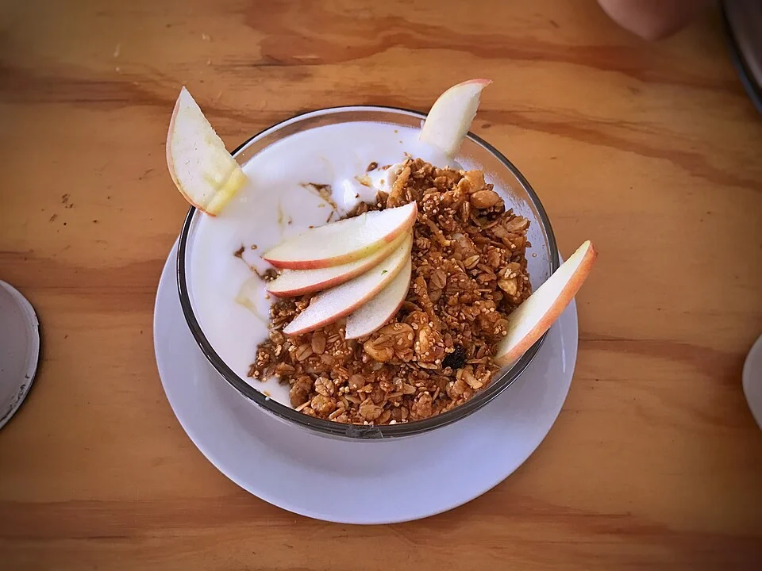

snack
match
i
↶ Undo
If the food does not respond, this viewer may be blocking scripts.
Open live Snack Match in your browser
.
What sounds good?
Pick with your eyes. We will sort the list.
1 of 100 ideas
Save and continue any time

Breakfast
Fruit & yoghurt bowl
2 min
· No cooking
No thanks
Yes please
◫
Discover
♡
0
Your picks
☷
Menu & list
Done